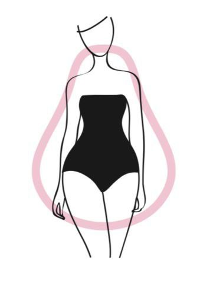
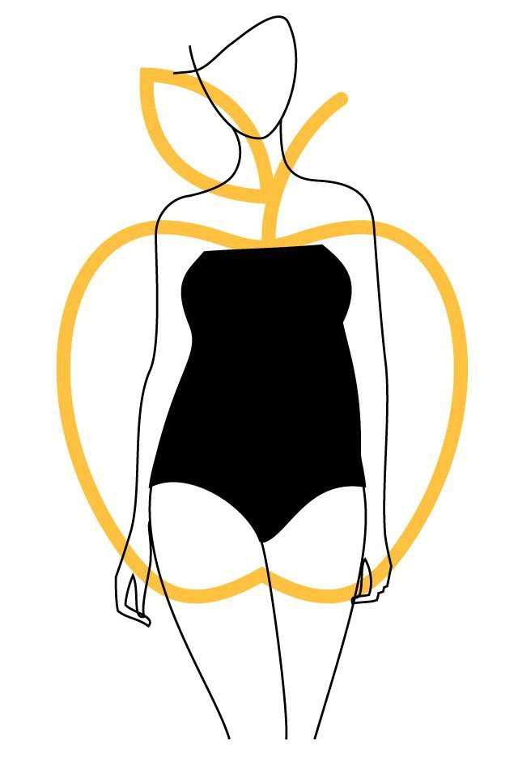
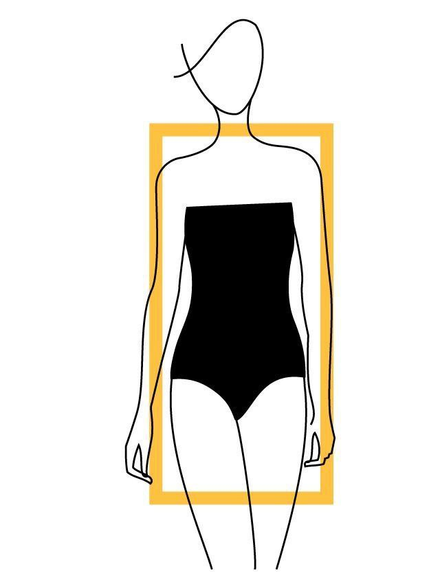
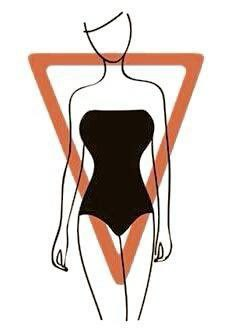

Understanding Body Shapes
ခန္ဓာကိုယ်ပုံစံတစ်ခုစီမှာ သူ့အလှနဲ့သူ ရှိကြပါတယ်။ သင့်ရဲ့ ခန္ဓာကိုယ်ပုံစံကို ဘယ်လိုခွဲခြားမလဲနဲ့ ဘယ်လိုအလှဆင်မလဲဆိုတာကို အခုပဲ လေ့လာကြည့်လိုက်ပါ။

Hourglass
ခါးသိမ်သိမ်လေးနဲ့ အချိုးအစား ပြေပြစ်တဲ့ပုံစံ။

Pear
ပခုံးကျဉ်းပြီး အောက်ပိုင်း (တင်ပါး) ကားတဲ့ပုံစံ။

Apple
ဗိုက်ပိုင်း ပြည့်ပြည့်လေးနဲ့ ခြေတံသွယ်သွယ်ပုံစံ။

Rectangle
ခါးသိပ်မရှိဘဲ အပေါ်အောက် တဖြောင့်တည်းရှိတဲ့ပုံစံ။

Inverted Triangle
ပခုံးကျယ်ပြီး အောက်ပိုင်း သွယ်သွားတဲ့ပုံစံ။
Key Styling Principles
✨ Enhancement Strategies
- • ခါးပတ်ပတ်တာမျိုး ဒါမှမဟုတ် ကိုယ်နဲ့ အံကိုက်ဖြစ်မယ့် အင်္ကျီတွေကို ဝတ်ပြီး ခါးလေးသိမ်နေတာကို ပေါ်လွင်အောင် လုပ်ပါ။
- • အချိုးအစား ပြေပြစ်သွားအောင် လိုအပ်တဲ့နေရာလေးတွေမှာ အဝတ်အစားကို ပွပွလေး ဒါမှမဟုတ် အလွှာလိုက်လေးတွေ ထည့်ဝတ်ပေးပါ။
- • ကိုယ့်ရဲ့ အလှဆုံးနေရာလေးတွေကို လူစိတ်ဝင်စားသွားအောင် အရောင်တောက်တောက်တွေ ဒါမှမဟုတ် ပန်းပြောက်ဒီဇိုင်းလေးတွေ သုံးပြီး ဆွဲဆောင်ပါ။
- • ခန္ဓာကိုယ် အချိုးအစားအလိုက် အသားကျနေမယ့် ပျော့ပျောင်းတဲ့ ပိတ်စမျိုးကို ရွေးချယ်ပါ။
🎯 Balance Techniques
- • ကိုယ်နဲ့အလိုက်ဖက်ဆုံးဖြစ်အောင် စနစ်တကျ ပြင်ဆင်ဝတ်ဆင်ပြီး ကြည့်ကောင်းအောင် လုပ်ပါ။
- • အရပ်ရှည်ပြီး ကိုယ်လုံးသွယ်သွယ်လေး ဖြစ်သွားအောင် ဒေါင်လိုက်အစင်းပါတာတွေကို ရွေးဝတ်ပါ။
- • အင်္ကျီတွေကို အလွှာလိုက် ထပ်ဝတ်တာမျိုးနဲ့ အချိုးအစား ပြေပြစ်အောင် ညှိဝတ်ပါ။
- • ကိုယ့်ရဲ့ ကိုယ်လုံးကိုယ်ပေါက် ပိုပေါ်လွင်သွားအောင် အသွယ်ဆုံးနေရာလေးတွေကို အသားပေးပြီး ဝတ်ဆင်ပါ။